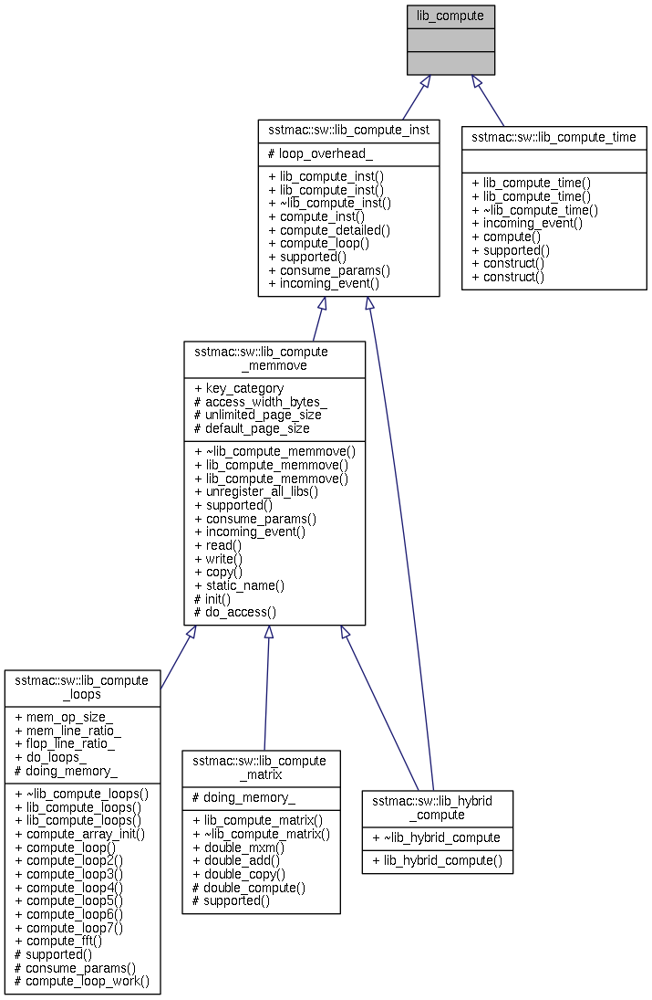
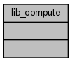

SST/macro
Main Page
Related Pages
Namespaces
Classes
Files
Class List
Class Index
Class Hierarchy
Class Members
lib_compute Class Reference
Inheritance diagram for lib_compute:

Collaboration diagram for lib_compute:

The documentation for this class was generated from the following file:
sstmac/software/libraries/compute/
lib_compute_time.h
Generated on Fri Sep 16 2016 16:24:38 for SST/macro by
1.8.6